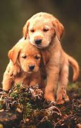

Dogs
Dogs are assumed to be a descendant of wolves and are commonly seen as man's best friend😊.They were the first animals domesticated by humans and are the most diverse mammals on earth.

Breeds
Here are some popular dog breed:D🐶:
- Collie
- German Shepherd
- Beagle
- Cocker Spaniel
- Golden retriever
- Labrador retriever
- Poodle
- Chihuahua
- Yorkshire Terrier
- Siberian Husky
Behavior
Dogs have a unique way of expressing themselvesğŸ˜.Here are some body languages they display and what they mean:
- Yawn- stressed or tired
- Tilting head to one side- curious or uncertain
- Tail wagging- friendly or unhappy
- Bowing- playful
- Growling- protective or playful
Facts
Here are some fun facts about dogs😮:
- Dog's eyes are designed to see in the dark
- Dog's can tell the way you walk in just five steps
- They are the most popular pets on the planet
- They can learn over 100 words and gestures
- They can only sweat from their paws
Health
Just like most mammals dogs also fall sick🤢 and have some health issues and concerns.Here are some common dog health issues and their solutions included:
- Fleas;treated with the appropriate medications
- Intestinal parasites;managed through deworming
- Oral health issues;addressed through dental care
- Allergies;managed by identifying triggers and using antihistamines
- Heartworm disease;prevented with regular medication
- Rabies;regular check-up and monthly shots
Training
Most people have fun when training their dogs😀 while fo others not so much😥.Here are some pro tips to make dog training worthwhile and if these don't work ,your dog is probably🤪.
- Start as soon as possible.Dogs are considered particularly receptive to training when they're puppies,but that doesn't mean you can't train adult dogs too
- Puppy-proof your home
- Stock up on high-value treats
- Do your research
- Consider working with a friend when training your dog
Diet
Dogs are picky eatersğŸ•ğŸ”🟠so here are a list of foods that they can or can not eat.
- Carrot
- Peanut Butter
- Salmon
- Popcorn
- Pineapple and watermelon
- Chocolate- can't
- Avocado- can't
- Nutmeg- can't
- Coffee and Tea- can't
- Garlic- can't
- Sweet potatoes
- Corn
Life cycle
Obviously,before most people will want to know whether their loving will be with them till death💀.Well this timeline will help you decide🤨:
- Birth- Puppies are born blind and deaf after 58-68 days of gestation.
- Socialization- After 3 to 12 weeks of age,puppies learn to interact with other dogs,humans and their environment.
- Adolescence- From 6 to 18 months of age,dogs undergo physical and behavioral changes as they reach sexual maturity
- Senescence- From 6 years of age onward,dogs enter their senior years and may show signs of aging,such as gray hairs,reduced activity and health issues.
- Death- Dogs have an average lifespan of 10-13 years,depending on their breed,size and health conditions.
Thats all for today on dogs!!.But wanna see something cool?
see for yourself!